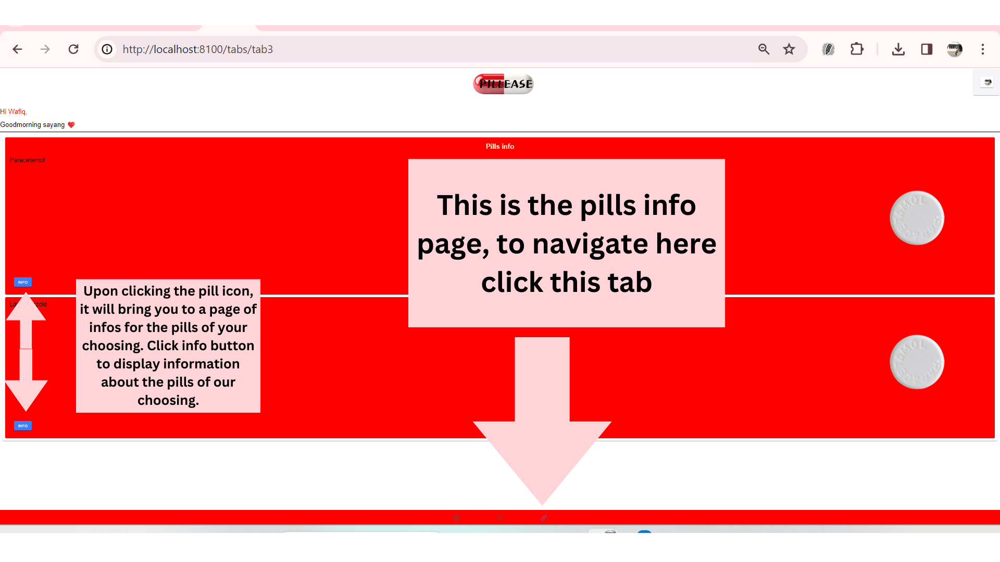

<ion-header>
  <ion-toolbar>
    <ion-title>
      USER GUIDELINE
    </ion-title>
  </ion-toolbar>
</ion-header>

<ion-content class="ion-padding">
  <div class="frame">
    
    <div class="overlay">

    </div>
  </div>

  <span>

    <ion-button [routerLink]="['/guideline']" transparent>1</ion-button>
    <ion-button [routerLink]="['/guideline1']" transparent>2</ion-button>
    <ion-button [routerLink]="['/guideline2']" transparent>3</ion-button>
    <ion-button [routerLink]="['/guideline3']" transparent>4</ion-button>
    <ion-button [routerLink]="['/guideline4']" transparent>5</ion-button>
    <ion-button [routerLink]="['/guideline5']" transparent>6</ion-button>
  </span>
  <ion-button [routerLink]="['/auth']" transparent color="dark">skip</ion-button>
</ion-content>
